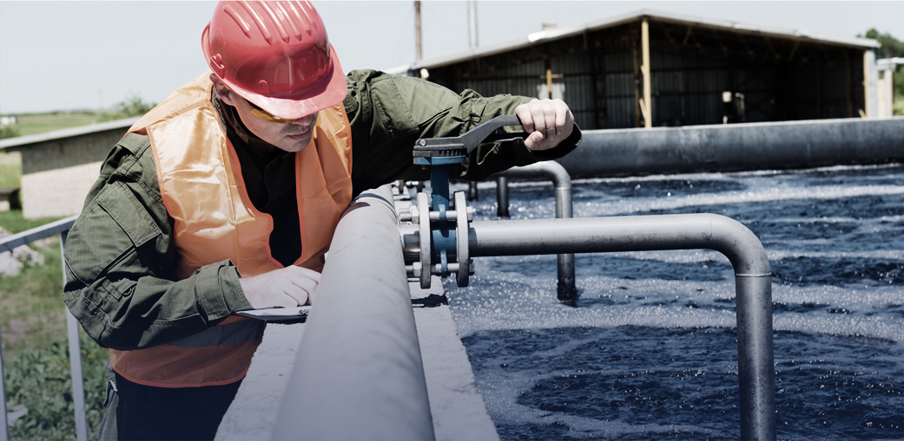
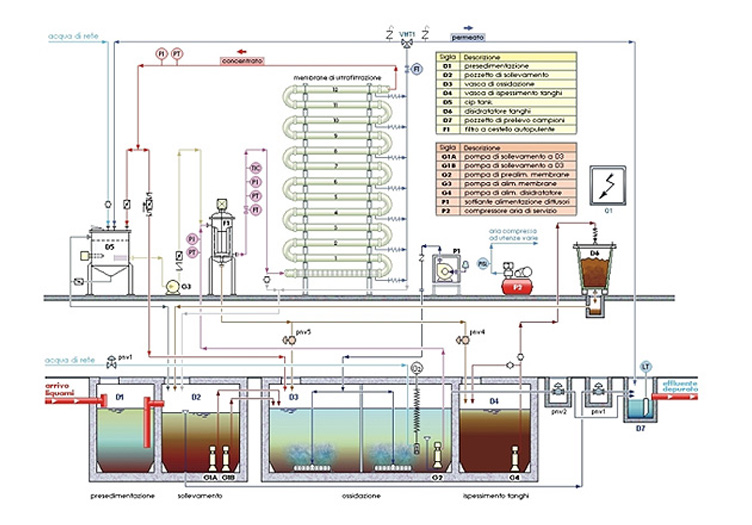

Prodotti e Servizi
Supervisione tecnica, gestione, manutenzione dei processi depurativi e dell’impiantistica
Supervisione tecnica, gestione, manutenzione dei processi depurativi e dell’impiantistica
La gestione e manutenzione ordinaria degli impianti di depurazione rappresenta un’attività di fondamentale importanza per garantire l’efficacia depurativa, la longevità delle apparecchiature ma anche il risparmio di risorse ed energie per il loro funzionamento; il depuratore è una "macchina" che funziona 24 ore su 24, deve essere condotta con oculatezza ed esperienza, ha bisogno di continue manutenzioni ed il conducente deve conoscerne ogni particolare per eseguire rapidamente qualsiasi manovra e per essere pronto a far fronte a qualsiasi imprevisto.
I depuratori biologici, ad esempio, sfruttano la capacità depurativa di colonie batteriche, che sono esseri viventi particolarmente sensibili alle condizioni esterne ed a sostanze nocive: il gestore deve essere in grado, anche attraverso l’utilizzo di strumentazione sofisticata, di prevenire, individuare ed eliminare eventuali disfunzioni di carattere biologico. Lo stesso vale per i trattamenti chimico-fisici, dove è richiesta una particolare sensibilità per ottenere i migliori risultati con il minimo consumo di reagenti.
Il soggetto gestore deve quindi possedere competenze che spaziano dalla meccanica all’idraulica, dall’elettrotecnica all’elettronica, dalla chimica alla biologia, senza dimenticare i complessi aspetti normativi riguardanti il settore della depurazione.
Visto l’elevato numero di impianti continuamente gestiti, e quindi l’enorme mole di dati tecnici/processistici rilevati ogni giorno, CID ha completamente informatizzato l’archiviazione e la gestione di tali dati realizzando un software proprietario, in grado non solo di archiviare tutte le informazioni tecniche proprie degli impianti (dimensioni e tipo di processi, caratteristiche delle apparecchiature..), ma anche i singoli eventi relativi all’attività di gestione (dati e misurazioni analitiche rilevati, consumi energetici, anomalie etc.), così da dare il massimo supporto storico al personale supervisore affinchè questo possa programmare al meglio l’attività stessa.
Per poter intervenire sempre con la massima tempestività, CID utilizza inoltre, dove possibile, i sistemidi telecontrollo/tele gestione a distanza.
Questo, oltre a limitare e quasi eliminare le possibili situazioni critiche a seguito di guasti od eventi particolari, migliora ulteriormente l’attività di supervisione processistica e gestionale, poiché tali sistemi rilevano anche i principali parametri processistici (OX disciolto, portate, pH, torbidità, etc..) e lo stato di funzionamento di tutte le apparecchiature, ed alcuni consentono anche la modifica dei settaggi di funzionamento nell’automazione (tempi di funzionamento, valori di set point, reset allarmi, etc..).